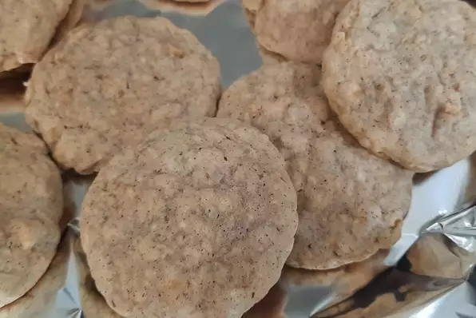

Soft Oatmeal Cookies

Description
This is healthier than double chocolate chip cookies! Soft, and moist, so you can always eat more (in moderation, but I'm not a doctor)!
Ingredients (for 24 servings)
- 1 cup butter, softened
- 1 cup white sugar
- 1 cup packed brown sugar
- 2 eggs
- 1 teaspoon vanilla extract
- 2 cups all-purpose flour
- 1 teaspoon baking soda
- 1 teaspoon salt
- 1 ½ teaspoons ground cinnamon
- 3 cups quick cooking oats
Steps
- In a medium bowl, cream together butter, white sugar, and brown sugar. Beat in eggs one at a time, then stir in vanilla. Combine flour, baking soda, salt, and cinnamon; stir into the creamed mixture. Mix in oats. Cover, and chill dough for at least one hour.
- Preheat the oven to 375 degrees F (190 degrees C). Grease cookie sheets. Roll the dough into walnut sized balls, and place 2 inches apart on cookie sheets. Flatten each cookie with a large fork dipped in sugar.
- Bake for 8 to 10 minutes in preheated oven. Allow cookies to cool on baking sheet for 5 minutes before transferring to a wire rack to cool completely.